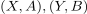
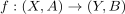
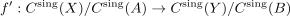
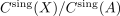
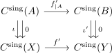
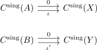

chain map of relative singular homology
1. Proposition
Let

be pairs of spaces and
a map of pairs. Then there exists a natural induced chain map
where

is the relative singular chain complex2. Proof
Follows from the colim functor, where

is a natural transformation between the diagrams
